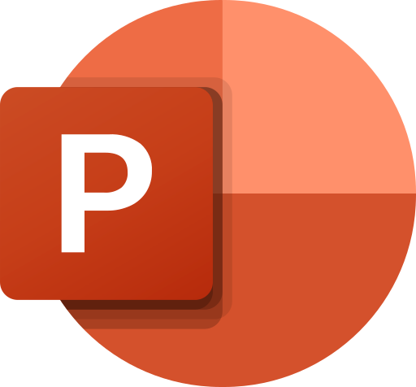

Projects
About Me
When I work with others, I expect efficiency, respect, and honesty from them and in turn, I make sure to always have those qualities on my end. My name is Billy, and I am currently in my third year of studying graphic and web design at Vanier College. I've chosen this field of work mainly because I love creating things and having that pride when I can say “I did that”. Even though I don't have much experience in the creative world prior to starting this program, I am a very curious person and I enjoy learning new things. My curiosity and desire to learn new things aren't the only things I bring to the table. I am a very humble person, so I believe I am easy to work with, but don't mistake my humbleness for passiveness, or carelessness. I take pride in my work and even though I'm always open to new ideas for a project, I am also not afraid to defend what I believe to be right.
École Démosthène / Twin Oaks Elementary School
Primary School
August 2007 - June 2014
Laval Junior / Senior Academy
Secondary School Diploma
August 2014 - June 2019
Vanier College
DCS/DEC in Computer Engineering Technology (Incomplete)
August 2019 - October 2020
DCS/DEC in Micropublishing & Hypermedia
August 2021 - Present
Hard Skills
Adobe Creative Suite
- Sufficient Experience
- Some Experience
Microsoft Office
- Sufficient Experience
- 
- Some Experience
Programming Languages
- Sufficient Experience
- Some Experience

Soft Skills
- Patient
- Organized
- Respectful
- Humble
- Creative
- Adaptable
- Team Player
- Good Listener
Contact Me
billykotsovos@gmail.com
Phone Number
514-836-6390